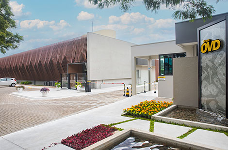
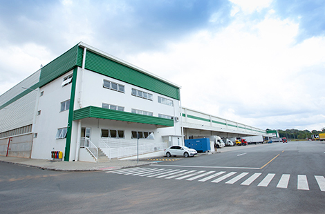
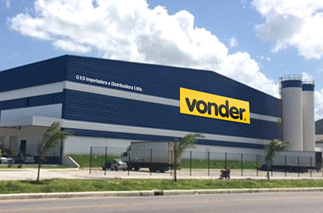
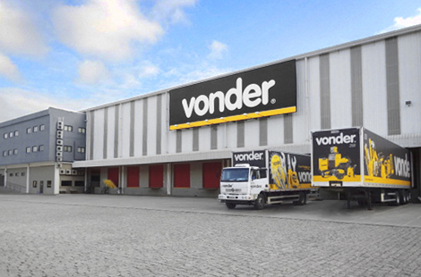
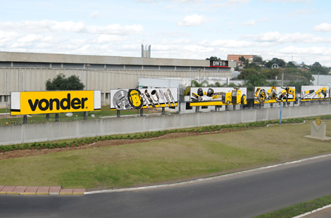
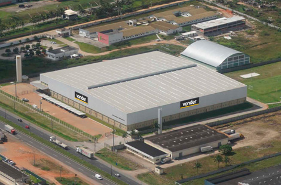
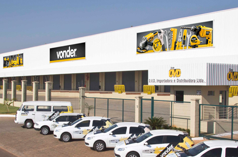
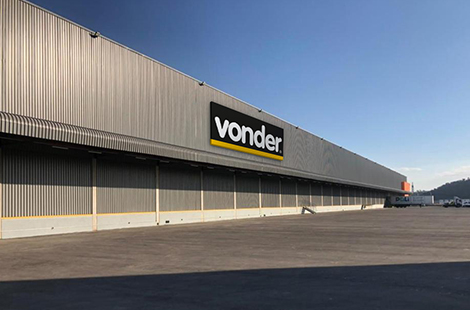
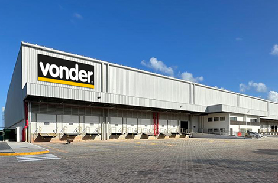

Conheça nossas sedes
Temos uma infraestrutura logística que atende com a máxima agilidade entregas para todo o país. Ao todo são sete sedes e mais duas filiais, distribuídas em pontos estratégicos do Brasil e que possuem espaços exclusivos para a demonstração e exposição de toda linha de produtos das nossas marcas, com modernos showrooms que surpreendem pela amplitude e eficiência do nosso mix.
-

CENTRO ADMINISTRATIVO E COMERCIALAs sedes Administrativa, Comercial e Área Técnica, em Curitiba, prestam o suporte de atendimento às demais unidades OVD e clientes em todo Brasil.
Rua João Bettega, 2.876 | Portão | CEP: 81070-900 | Curitiba, PR
-

Matriz – Centro de Distribuição PARANÁEm Curitiba, no Paraná, nossa estrutura logística conta com 31.300 m2 de área construída para atendimento com máxima qualidade e eficiência a todo território nacional.
Av. Juscelino Kubitschek de Oliveira, 4.158, conjunto 1 (Condomínio Ecopark) | Cidade Industrial | CEP: 81260-000 | Curitiba, PR
-

Centro de Distribuição SANTA CATARINAEm Itajaí, Santa Catarina, o Centro de Distribuição conta com 16.000 m² de área construída, localizado em uma área estratégica para a distribuição em todo o estado. Nossa sede catarinense reforça ainda mais nossa operação logística no Sul do país, oferecendo ainda mais agilidade nas entregas para os clientes da região.
Rod. Jorge Lacerda, 835, Bloco A | Espinheiros | CEP: 88317-100 | Itajaí, SC
-

Centro de Distribuição SÃO PAULONa cidade de Jundiaí, em São Paulo, a OVD conta com 27.000 m² de área construída, no estado considerado o motor econômico do país. Nossa sede reúne o que há de mais moderno em tecnologia logística para dinamizar e atender nossos clientes presentes na região.
Av. Prefeito Luis Latorre, 10.300 | Vila das Hortências | CEP: 13209-430 | Jundiaí, SP
-

Centro de Distribuição RIO GRANDE DO SULNa cidade de Novo Hamburgo, no Rio Grande do Sul, são mais 11.000 m² de área construída. A sede gaúcha está localizada no Vale dos Sinos, importante polo econômico do estado, fortalecendo o atendimento aos clientes desta região.
Av. Vereador Adão Rodrigues de Oliveira, 2.695 | Liberdade | CEP: 93334-290 | Novo Hamburgo, RS
-

Centro de Distribuição BAHIAEm Feira de Santana, na Bahia, o Centro de Distribuição conta com 16.500 m² de área construída. Distribui para todos os estados do Nordeste, estando localizado em uma região estratégica, cortada pelas principais rodovias do país e atendendo um mercado em crescente expansão.
Av. Dep. Luís Eduardo Magalhães, km 521, s/n | Subaé | CEP: 44079-002 | Feira de Santana, BA
-

Centro de Distribuição GOIÁSNo polo industrial de Aparecida de Goiânia, em Goiás, somam-se aproximadamente 16.000 m² de área construída, que se destaca pela sua infraestrutura, atuando de forma competitiva e eficiente nas regiões Norte, Centro-Oeste e Triângulo Mineiro.
Av. Maria Elias Lisboa Santos, s/n, Quadra 008, Lote 0008 | Parque Industrial Vice-Presidente José Alencar | CEP: 74993-530 | Aparecida de Goiânia, GO
-

Centro de Distribuição MINAS GERAISPosicionado em uma localização privilegiada, junto a um dos mais expressivos polos industriais do Brasil, conta com mais de 20.000 m2 de área e uma robusta estrutura logística, oferecendo uma rápida resposta de abastecimento para nossos clientes de Minas Gerais, Espírito Santo e região.
Rod. BR-381 Fernão Dias, km 483, Galpão 7, Módulo A | Distrito Industrial - Jardim Piemont Sul | CEP: 32669-895 | Betim, MG
-

Centro de Distribuição PERNAMBUCONa cidade de Cabo de Santo Agostinho-PE, uma estrutura com 18.300 m², ampliando a cobertura e atendimento no Norte e Nordeste brasileiro.
Rodovia BR-101 Sul, 3.791, Bloco F Galpões 1F, 2F, 3F, 8F, 9F, 10F | Distrito Industrial Santo Estevão | CEP: 54503-010 | Cabo de Santo Agostinho, PE